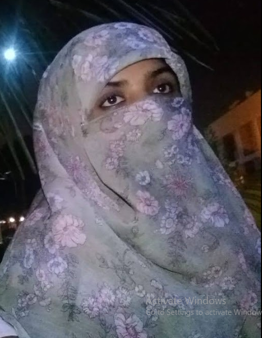

Muneeza Zubair

Summary
I am a creative and detail-oriented Front-End Web Developer building
responsive and accessible web applications using modern web technologies.
Education
-
Bachelor of Science in Computer Science University of XYZ graduated in
May 2019
Work Experience
-
Front-End Developer ABC Tech Solutions, New York, NY
January 2022 – Present
-
Developed and maintained responsive, user-friendly web pages and
applications using React, HTML5, CSS3, and JavaScript.
-
Collaborated with UX/UI designers to translate wireframes and mockups
into pixel-perfect interfaces.
-
Optimized application performance by 30% through code-splitting, lazy
loading, and using efficient image formats.
-
Worked closely with back-end developers to integrate APIs and enhance
application functionality.
-
Conducted cross-browser testing to ensure compatibility across major
web browsers and devices.
-
Used Git and GitHub for version control and collaborated with team
members using Agile methodology.
Skills
-
Languages & Technologies: HTML5, CSS3, JavaScript (ES6+), TypeScript,
Sass, LESS
-
Frameworks & Libraries: React.js, Redux, jQuery, Bootstrap, Tailwind CSS
Version Control: Git, GitHub
-
Responsive & Adaptive Design: Mobile-first design, media queries,
Flexbox, CSS Grid
- APIs: RESTful APIs, GraphQL, Axios, Fetch
-
Cross-Browser Compatibility: Testing and debugging on different browsers
Collaboration Tools: JIRA, Trello, Slack, Agile/Scrum methodologies
Awards and Certifications
- JavaScript Algorithms and Data Structures Certification - freeCodeCamp (2021)
- Responsive Web Design Certification - freeCodeCamp (2020)
- React.js Essential Training - LinkedIn Learning (2019)
Others
My Hobbies
Contact me
.